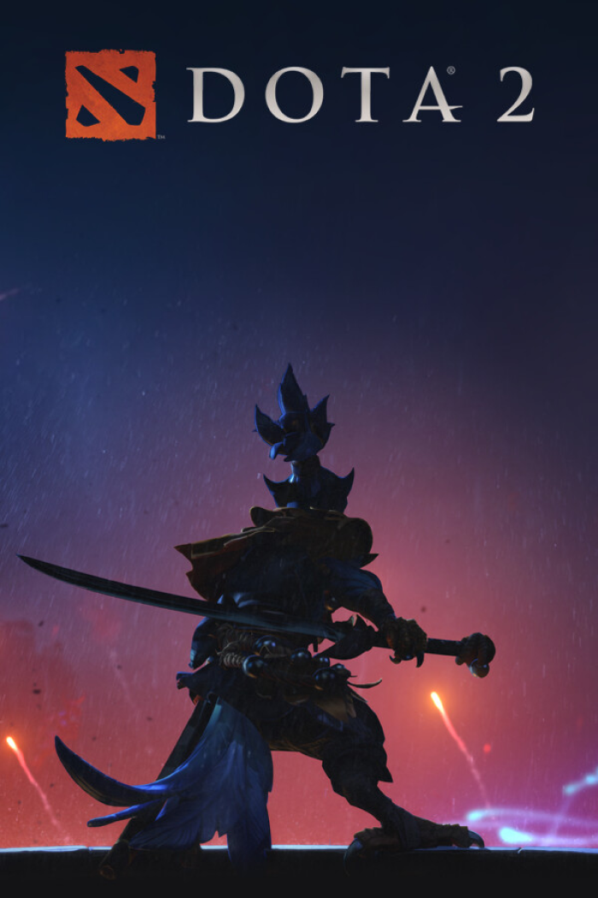

NightBlade
EloTracker помог наконец понять, что именно я делаю не так в лейте. После пары недель использования винрейт заметно вырос, а играть стало спокойнее.

EloTracker — команда энтузиастов киберспорта, которая создаёт удобный сервис для отслеживания и анализа матчей в соревновательных играх. Мы начинаем с Dota 2 и собираем данные из каждого вашего матча, чтобы превращать их в наглядную статистику, графики и подсказки для развития. EloTracker помогает игрокам разбирать свои игры, находить ошибки и сильные стороны, а также уверенно расти по рейтингу.
EloTracker помог наконец понять, что именно я делаю не так в лейте. После пары недель использования винрейт заметно вырос, а играть стало спокойнее.
Очень нравится, как показываются ключевые ошибки по матчам. Захожу после каждой игры, быстро смотрю цифры и сразу понимаю, над чем работать.
Интерфейс простой и не перегружен. EloTracker стал для меня обязательной вкладкой вместе с клиентом игры.
Классный инструмент для тимплея. Мы с командой сравниваем статистику перед тренировки и видим, кто проседает по роли.
Присоединяйтесь
Присоединяйтесь к нам и 10 000 пользователям, которые доверяют нам.
Карьера
Ищем специалистов в нашу команду для создания инновационных продуктов.
.png)